**原创声明**：本文系作者原创，谢绝个人、媒体、公众号或网站未经授权转载，违者追究其法律责任。
前 言
互联网领域的通信技术，有各式各样的通信协议可以选择，比如基于 TCP/IP 协议簇的 HTTP(1/2)、SPDY 协议、WebSocket、Google 基于 UDP 的 QUIC 协议等。这些协议，都有完整的报文格式与字段定义，对安全，序列化机制，数据压缩机制，CRC 校验机制等各种通信细节都有较好的设计。能够高效、稳定、且安全地运行在公网环境。
而对于私网环境，比如一个公司的 IDC 内部，如果所有应用的节点间，全部通过标准协议来通信，会有很多问题：比如研发效率方面的影响，我们的研发框架，需要做大量业务数据转化成标准协议的工作；再比如升级兼容性，标准协议的字段众多，版本各异，兼容性也得不到保障；除此还有无用字段的传输，也会造成资源浪费，功能定制也可能不那么灵活。而解决这些问题，比较常见的做法就是自己来设计协议，可以自己来定义字段，制定升级方式，可插拔可开关的特性需求等，我们把这样的协议叫做私有通信协议。
在蚂蚁金服的分布式技术体系下，我们大量的技术产品（非网关类产品），都需要在内网，进行节点间通信。高吞吐、高并发的通信，数量众多的连接管理（C10K 问题），便捷的升级机制，兼容性保障，灵活的线程池模型运用，细致的异常处理与日志埋点等，这些功能都需要在通信协议和实现框架上做文章。本文主要从如下几个方面来对蚂蚁通信框架实践之路进行介绍：
- 私有通信协议设计
- 基础通信功能设计要点分析
- 私有通信协议设计举例
- 蚂蚁自研通信框架 Bolt
私有通信协议设计
我们的分布式架构，所需要的内部通信模块，采用了私有协议来设计和研发。当然私有协议，也是有很多弊端的，比如在通用性上、公网传输的能力上相比标准协议会有劣势。然而，我们为了最大程度的提升性能，降低成本，提高灵活性与效率，最佳选择还是高度定制化的私有协议：
- 可以有效地利用协议里的各个字段
- 灵活满足各种通信功能需求：比如 CRC 校验，Server Fail-Fast 机制，自定义序列化器
- 最大程度满足性能需求：IO 模型与线程模型的灵活运用
比如一个典型的 Request-Response 通信场景：
- 在一个通信节点上，如何把一个请求对象，序列化成字节流，通过怎样的网络传输方式，传递到另一个节点
- 在对端的通信节点上，需要高效的读取字节流，并反序列化成原始的请求对象，然后根据请求内容，做一些逻辑处理。处理完成后，响应返回。
- 同时，此时要考虑，如何充分利用网络 IO、CPU 以及内存，来保证吞吐和处理效率的最优。
文章后面的内容，比较清晰地介绍了这个通信场景的设计与实现方案。
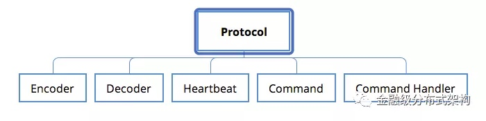
图1 - 私有协议与必要的功能模块
首先协议设计上，我们需要考虑的几个关键问题：
Protocol
- 协议应该包括哪些必要字段与主要业务负载字段：协议里设计的每个字段都应该被使用到，避免无效字段；
- 需要考虑通信功能特性的支持：比如CRC校验，安全校验，数据压缩机制等；
- 需要考虑协议的可扩展性：充分评估现有业务的需求，设计一个通用，扩展性高的协议，避免经常对协议进行修改；
- 需要考虑协议的升级机制：毕竟是私有协议，没有长期的验证，字段新增或者修改，是有可能发生的，因此升级机制是必须考虑的；
Encoder 与 Decoder
- 协议相关的编解码方式：私有协议需要有核心的encode与decode过程，并且针对业务负载能支持不同的序列化与反序列化机制。这部分，不同的私有协议，由于字段的差异，核心encode和decode过程是不一样的，因此需要分开考虑
Heartbeat
- 协议相关的心跳触发与处理：不同的协议对心跳的需求，处理逻辑也可能是不同的。因此心跳的触发逻辑，心跳的处理逻辑，也都需要单独考虑。
Command 与 Command Handler
- 可扩展的命令与命令处理器管理 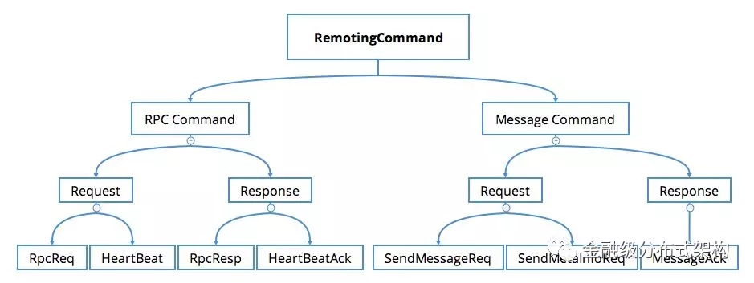 图2 - 通信命令设计举例
- 负载命令：一般传输的业务的具体数据，比如带着请求参数，响应结果的命令；
- 控制命令：一些功能管理命令，心跳命令等，它们通常完成一些复杂的分布式跨节点的协调功能，以此来保证负载命令通信过程的稳定，是必不可少的一部分。
- 协议的通信过程，会有各种命令定义，逻辑上，我们把传输业务具体负载的请求对象，叫做负载命令（Payload Command），另一种叫做控制命令（Control Command），比如一些功能管理命令，或者心跳命令。
- 定义了通信命令，我们还需要定义命令处理器，用来编写各个命令对应的业务处理逻辑。同时，我们需要保存命令与命令处理器的映射关系，以便在处理阶段，走到正确的处理器。
有了私有协议的设计要点，我们接下来分两部分来介绍下实现：基础通信模块与私有协议设计举例。
首先是基础通信功能模块的实现，这部分沉淀了我们的一些优化和最佳实践，可以被不同的私有协议复用。
基础通信功能设计要点分析
蚂蚁的中间件产品，主要是 Java 语言开发，如果通信产品直接用原生的 Java NIO 接口开发，工作量相当庞大。通常我们会选择一些基础网络编程框架，而在基础网络通信框架上，我们也经历了自研（比如伯岩的 Gecko）、基于 Apache Mina 实现。最终，由于 Netty 在网络编程领域的出色表现，我们逐步切换到了 Netty 上。
Netty 在 2008 年就发布了3.0.0 版本，到现在已经经历了 10 年多的发展。而且从 4.x 之后的版本，把无锁化的设计理念放在第一位，然后针对内存分配，高效的 Queue 队列，高吞吐的超时机制等，做了各种细节优化。同时 Netty 的核心 Committer 与社区非常活跃，如果发现了缺陷能够及时得到修复。所有这些，使得 Netty 性能非常的出色和稳定，成为当下 Java 领域最优秀的网络通信组件。接下来主要介绍我们对 Netty 的学习经验，内部使用上的一些最佳实践。
1. 网络 IO 模型与线程模型
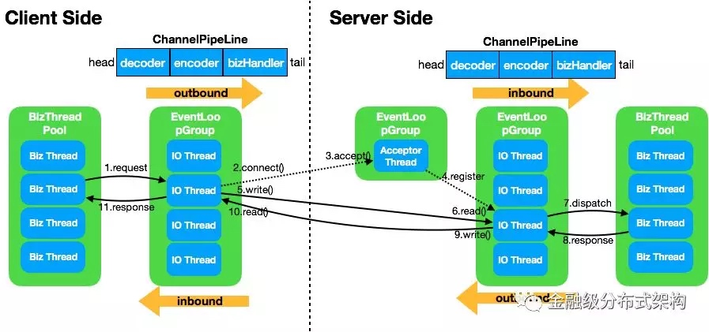
图3 - Netty与Reactor
如果你对 Java 网络 IO 这个话题感兴趣的话，肯定看过 Doug Lea 的《Scalable IO in Java》，在这个 PPT 里详细介绍了如何使用 Java NIO 的技术来实现 Douglas C. Schmidt 发表的 Reactor 论文里所描述的 IO 模型。针对这个高效的通信模型，Netty 做了非常友好的支持：
Reactor模型
我们只需要在初始化
ServerBootstrap时，提供两个不同的EventLoopGroup实例，就实现了 Reactor 的主从模型。我们通常把处理建连事件的线程，叫做 BossGroup，对应ServerBootstrap构造方法里的parentGroup参数，即我们常说的 Acceptor 线程；处理已创建好的channel相关连 IO 事件的线程，叫做 WorkerGroup，对应ServerBootstrap构造方法里的childGroup参数，即我们常说的 IO 线程。最佳实践：通常
bossGroup只需要设置为1即可，因为ServerSocketChannel在初始化阶段，只会注册到某一个eventLoop上，而这个eventLoop只会有一个线程在运行，所以没有必要设置为多线程（什么时候需要多线程呢，可以参考 Norman Maurer 在 StackOverflow 上的这个回答）；而 IO 线程，为了充分利用 CPU，同时考虑减少线上下文切换的开销，通常设置为 CPU 核数的两倍，这也是 Netty 提供的默认值。
串行化设计理念
- Netty 从
4.x的版本之后，所推崇的设计理念是串行化处理一个Channel所对应的所有 IO 事件和异步任务，单线程处理来规避并发问题。Netty 里的Channel在创建后，会通过EventLoopGroup注册到某一个EventLoop上，之后该Channel所有读写事件，以及经由ChannelPipeline里各个Handler的处理，都是在这一个线程里。一个Channel只会注册到一个EventLoop上，而一个EventLoop可以注册多个Channel。所以我们在使用时，也需要尽可能避免使用带锁的实现，能无锁化就无锁。 - 最佳实践：
Channel的实现是线程安全的，因此我们通常在运行时，会保存一个Channel的引用，同时为了保持 Netty 的无锁化理念，也应该尽可能避免使用带锁的实现，尤其是在Handler里的处理逻辑。举个例子：这里会有一个比较特殊的容易死锁的场景，比如在业务线程提交异步任务前需要先抢占某个锁，Handler里某个异步任务的处理也需要获取同一把锁。如果某一个时刻业务线程先拿到锁 lock1，同时Handler里由于事件机制触发了一个异步任务 A，并在业务线程提交异步任务之前，提交到了EventLoop的队列里。之后，业务线程提交任务 B，等待 B 执行完成后才能释放锁 lock1；而任务 A 在队列里排在 B 之前，先被执行，执行过程需要获取锁 lock1 才能完成。这样死锁就发生了，与常见的资源竞争不同，而是任务执行权导致的死锁。要规避这类问题，最好的办法就是不要加锁；如果实在需要用锁，需要格外注意 Netty 的线程模型与任务处理机制。
- Netty 从
业务处理
- IO 密集型的轻计算业务：此时线程的上下文切换消耗，会比 IO 线程的占用消耗更为突出，所以我们通常会建议在 IO 线程来处理请求；
- CPU 密集型的计算业务：比如需要做远程调用，操作 DB 的业务，此时 IO 线程的占用远远超过线程上下文切换的消耗，所以我们就会建议在单独的业务线程池里来处理请求，以此来释放 IO 线程的占用。该模式，也是我们蚂蚁微服务，消息通信等最常使用的模型。该模式在后面的 RPC 协议实现举例部分会详细介绍。
- 如文章开头所描述的场景，我们需要合理设计，来将硬件的 IO 能力，CPU 计算能力与内存结合起来，发挥最佳的效果。针对不同的业务类型，我们会选择不同的处理方式
- 最佳实践：“Never block the event loop, reduce context-swtiching”，引自Netty committer Norman Maurer，另外阿里 HSF 的作者毕玄也有类似的总结。
其他实践建议
- 最小化线程池，能复用
EventLoopGroup的地方尽量复用。比如蚂蚁因为历史原因，有过两版 RPC 协议，在两个协议升级过渡期间，我们会复用 Acceptor 线程与 IO 线程在同一个端口处理不同协议的请求；除此，针对多应用合并部署的场景，我们也会复用 IO 线程防止一个进程开过多的 IO 线程。 - 对于无状态的
ChannelHandler，设置成共享模式。比如我们的事件处理器，RPC 处理器都可以设置为共享，减少不同的Channel对应的ChannelPipeline里生成的对象个数。 - 正确使用
ChannelHandlerContext的ctx.write()与ctx.channel().write()方法。前者是从当前Handler的下一个Handler开始处理，而后者会从 tail 开始处理。大多情况下使用ctx.write()即可。 - 在使用
Channel写数据之前，建议使用isWritable()方法来判断一下当前ChannelOutboundBuffer里的写缓存水位，防止 OOM 发生。不过实践下来，正常的通信过程不太会 OOM，但当网络环境不好，同时传输报文很大时，确实会出现限流的情况。
- 最小化线程池，能复用
2. 连接管理
为了提高通信效率，我们需要考虑复用连接，减少 TCP 三次握手的次数，因此需要有连接管理的机制。而在业务的通信场景中，我们还识别到一些不得不走硬负载（比如 LVS VIP）的场景，此时如果只建立单链接，可能会出现负载不均衡的问题，此时需要建立多个连接，来缓解负载不均的问题。我们需要设计一个针对某个连接地址（IP 与 Port 唯一确定的地址）建立特定数目连接的实现，同时保存在一个连接池里。该连接池设计了一个通用的 PoolKey不限定 Key 的类型。
需要注意的是，这里的建连过程，有一个并发问题要解，比如客户端在高并发的调用建连接口时，如何保证建立的连接刚好是所设定的个数呢？为了配合 Netty 的无锁理念，我们也采用一个无锁化的建连过程来实现，利用 ConcurrentHashMap 的 putIfAbsent 接口：
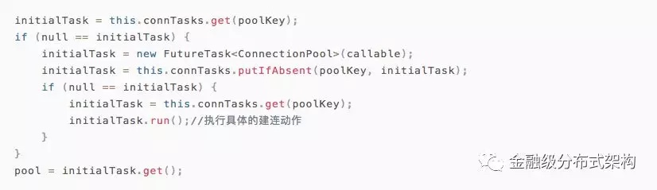
代码1 - 无锁建连代码
除此，我们的连接管理，还要具备定时断连功能，自动重连功能，自定义连接选择算法功能来适用不同的连接场景。
- 最佳实践：在 Netty 的 4.0.28.Final#3218 里，提供了一种
ChannelPool的接口类与默认实现，其中FixedChannelPool与我们实现的连接池做的事情一样。而 Netty 采用了更巧妙的方式来规避并发问题，即在初始化FixedChannelPool时，就将其关联到某一个eventLoop上，后续的建连动作，采用经典的inEventLoop()方法来判断，如果不在eventLoop线程，则入队等待下次调度。如此规避了并发问题。这个功能，我们目前还没有实践过，后续计划采用这个官方实现重构一版。
3. 基础通信模型
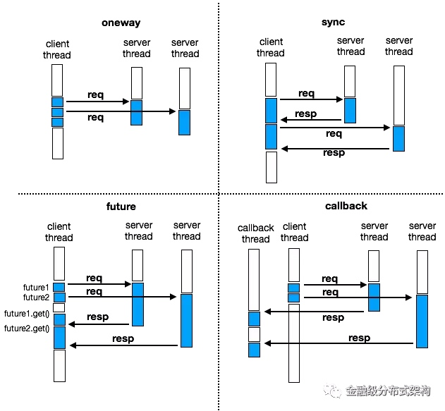
图4 - 几种通信模型
如图所示，我们实现了多种通信接口 oneway ，sync ，future ，callback 。图中都是ping/pong模式的通信，蓝色部分表示线程正在执行任务
- 可以看到
oneway不关心响应，请求线程不会被阻塞，但使用时需要注意控制调用节奏，防止压垮接收方； -
sync调用会阻塞请求线程，待响应返回后才能进行下一个请求。这是最常用的一种通信模型； -
future调用，在调用过程不会阻塞线程，但获取结果的过程会阻塞线程； -
callback是真正的异步调用，永远不会阻塞线程，结果处理是在异步线程里执行。
4. 超时控制
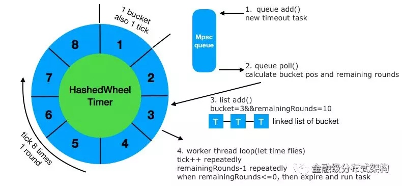
图5 - 超时控制模型
除了 oneway 模式，其他三种通信模型都需要进行超时控制，我们同样采用 Netty 里针对超时机制，所设计的高效方案 HashedWheelTimer 。如图所示，其原理是首先在发起调用前，我们会新增一个超时任务 timeoutTask 到 MpscQueue （Netty 实现的一种高效的无锁队列）里，然后在循环里，会不断的遍历 Queue 里的这些超时任务（每次最多10万），针对每个任务，会根据其设置的超时时间，来计算该任务所属于的 bucket 位置与剩余轮数 remainingRounds ，然后加入到对应 bucket 的链表结构里。随着 tick++ 的进行，时间在不断的增长，每 tick 8 次，就是 1 个时间轮 round。当对应超时任务的remainingRounds减到 0 时，就是触发这个超时任务的时候，此时再执行其 run() 方法，做超时逻辑处理。
- 最佳实践：通常一个进程使用一个
HashedWheelTimer实例，采用单例模型即可。
5. 批量解包与批量提交
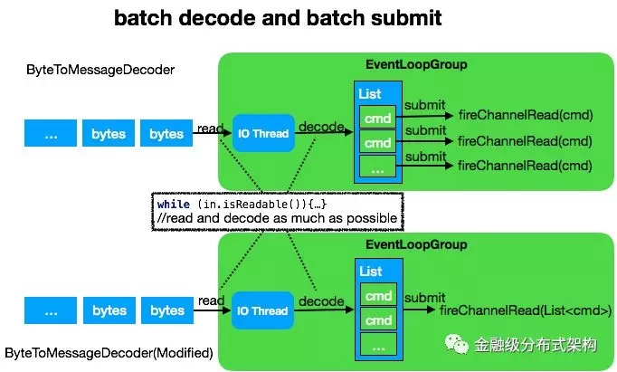
图6 - 批量解包与批量提交
Netty 提供了一个方便的解码工具类 ByteToMessageDecoder ，如图上半部分所示，这个类具备 accumulate 批量解包能力，可以尽可能的从 socket 里读取字节，然后同步调用 decode 方法，解码出业务对象，并组成一个 List 。最后再循环遍历该 List ，依次提交到 ChannelPipeline 进行处理。此处我们做了一个细小的改动，如图下半部分所示，即将提交的内容从单个 command ，改为整个 List 一起提交，如此能减少 pipeline 的执行次数，同时提升吞吐量。这个模式在低并发场景，并没有什么优势，而在高并发场景下对提升吞吐量有不小的性能提升。
- 最佳实践：
ByteToMessageDecoder因为内部的实现有成员变量，不是无状态的，所以一定不能被设置为@Sharable
6. 其他有用的功能
- 事件触发与监听机制
- Netty 的
ChannelHandler完美实现了拦截器模式。在ChannelHandler里hook了各个IO事件与IO操作的方法，我们可以方便的覆写这些方法，来加一些自定义的逻辑。比如为了把建连，断连事件触发给上层业务，方便做一些准备或者优雅关闭的处理，我们实现一个继承了ChannelInBoundHandler与ChannelOutboundHandler的处理器，覆盖这些事件所对应的建连与断连方法，然后设计一套业务的event感知逻辑即可。
- Netty 的
- 双工通信
- 我们知道 TCP 是可以提供全双工的通信能力的。因此，当客户端与服务端建立连接后，我们是可以由服务端发起通信请求，客户端来处理的。而为了支持这个功能，我们只需要把可以复用的
inboundHandler与outboundHandler在 客户端的Bootstrap与服务端的ServerBootstrap里都注册一遍即可
- 我们知道 TCP 是可以提供全双工的通信能力的。因此，当客户端与服务端建立连接后，我们是可以由服务端发起通信请求，客户端来处理的。而为了支持这个功能，我们只需要把可以复用的
有了私有协议的设计要点，与基础通信模块的实现，我们来看一个私有协议设计的举例，一种典型的 RPC 特征的通信实现。
私有通信协议举例
1. 通信协议的设计
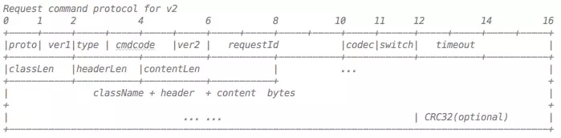
图7 - 协议字段举例
-
ProtocolCode：如果一个端口，需要处理多种协议的请求，那么这个字段是必须的。因为需要根据ProtocolCode来进入不同的核心编解码器。比如在支付宝，因为曾经使用过基于mina开发的通信框架，当时设计了一版协议。因此，我们在设计新版协议时，需要预留该字段，来适配不同的协议类型。该字段可以在想换协议的时候，方便的进行更换。 -
ProtocolVersion：确定了某一种通信协议后，我们还需要考虑协议的微小调整需求，因此需要增加一个version的字段，方便在协议上追加新的字段
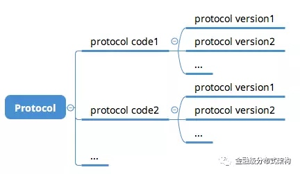
图8 - 协议号与版本号的关系
-
RequestType：请求类型， 比如requestresponseoneway -
CommandCode：请求命令类型，比如request可以分为：负载请求，或者心跳请求。oneway之所以需要单独设置，是因为在处理响应时，需要做特殊判断，来控制响应是否回传。 -
CommandVersion：请求命令版本号。该字段用来区分请求命令的不同版本。如果修改Command版本，不修改协议，那么就是纯粹代码重构的需求；除此情况，Command的版本升级，往往会同步做协议的升级。 -
RequestId：请求 ID，该字段主要用于异步请求时，保留请求存根使用，便于响应回来时触发回调。另外，在日志打印与问题调试时，也需要该字段。 -
Codec：序列化器。该字段用于保存在做业务的序列化时，使用的是哪种序列化器。通信框架不限定序列化方式，可以方便的扩展。 -
Switch：协议开关，用于一些协议级别的开关控制，比如 CRC 校验，安全校验等。 -
Timeout：超时字段，客户端发起请求时，所设置的超时时间。该字段非常有用，在后面会详细讲解用法。 -
ResponseStatus：响应码。从字段精简的角度，我们不可能每次响应都带上完整的异常栈给客户端排查问题，因此，我们会定义一些响应码，通过编号进行网络传输，方便客户端定位问题。 -
ClassLen：业务请求类名长度 -
HeaderLen：业务请求头长度 -
ContentLen：业务请求体长度 -
ClassName：业务请求类名。需要注意类名传输的时候，务必指定字符集，不要依赖系统的默认字符集。曾经线上的机器，因为运维误操作，默认的字符集被修改，导致字符的传输出现编解码问题。而我们的通信框架指定了默认字符集，因此躲过一劫。 -
HeaderContent：业务请求头 -
BodyContent：业务请求体 -
CRC32：CRC校验码，这也是通信场景里必不可少的一部分，而我们金融业务属性的特征，这个显得尤为重要。
2. 灵活的反序列化时机控制
从上面的协议介绍，可以看到协议的基本字段所占用空间是比较小的，目前只有24个字节。协议上的主要负载就是 ClassName ，HeaderContent ， BodyContent 这三部分。这三部分的序列化和反序列化是整个请求响应里最耗时的部分。在请求发送阶段，在调用 Netty 的写接口之前，会在业务线程先做好序列化，这里没有什么疑问。而在请求接收阶段，反序列化的时机就需要考虑一下了。结合上面提到的最佳实践的网络 IO 模型，请求接收阶段，我们有 IO 线程，业务线程两种线程池。为了最大程度的配合业务特性，保证整体吞吐我们设计了精细的开关来控制反序列化时机：
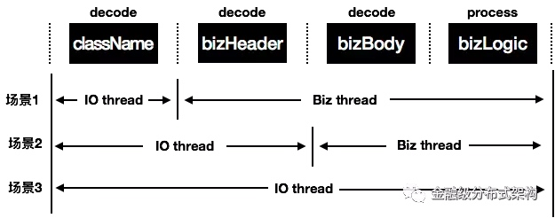
图9 - 反序列化与业务处理时序图
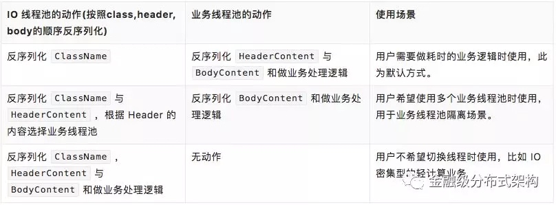
表格1 - 反序列化场景具体介绍
3. Server Fail-Fast 机制
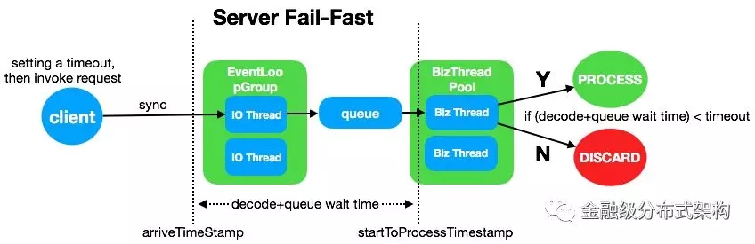
图10 - Server Fail-Fast机制
在协议里，留意到我们有timeout这个字段，这个是把客户端发起调用时，所设置的超时时间通过协议传到了 Server 端。有了这个，我们就可以实现 Fail-Fast 快速失败的机制。比如当客户端设置超时时间 1s，当请求到达 Server 开始计时 arriveTimeStamp ，到任务被线程调度到开始处理时，记录 startToProcessTimestamp ，二者的差值即请求反序列化与线程池排队的时延，如果这个时间间隔已经超过了 1s，那么请求就没有必要被处理了。这个机制，在服务端出现处理抖动时，对于快速恢复会很有用。
- 最佳实践：不要依赖跨系统的时钟，因为时钟可能会不一致，跨系统就会出现误差，因此是从请求到达 Server 的那一刻，在 Server 的进程里开始计时。
4. 用户请求处理器(UserProcessor)
在通用设计部分，我们提到了命令处理器。而为了方便开发者使用，我们还提供了一个用户请求处理器，即在 RPC 的命令处理器中，再增加一层映射关系，保存的是 业务传输对象的 className 与 UserProcessor 的对应关系。此时服务端只需要简单注册一个 className 对应的processor，并提供一个独立的 executor ，就可以实现在业务线程处理请求了。
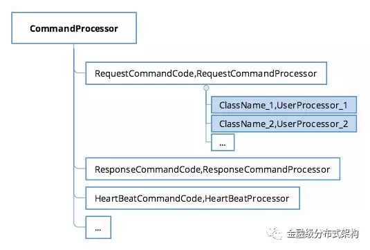
图11 - 命令处理器与用户请求处理器的关系
除此，我们还设计了一个 RemotingContext 用于保存请求处理阶段的一些通信层的关键辅助类或者信息，方便通信框架开发者使用；同时还提供了一个 BizContext ，有选择把通信层的信息暴露给框架使用者，方便框架使用者使用。有了用户请求处理器，以及上下文的传递机制，我们就可以方便的把通信层处理逻辑与业务处理逻辑联动起来，比如一些开关的控制，字段的传递等定制功能：
- 请求超时处理开关：用于开关 Server Fail-Fast 机制。
- IO 线程业务处理开关：用户可以选择在 IO 线程处理业务请求；或者在业务线程来处理。
- 线程池选择器
ExecutorSelector：用户可以提供多个业务线程池，使用ExecutorSelector来实现选择逻辑 - 泛化调用的支持：序列化请求与反序列化响应阶段，针对泛化调用，使用特殊的序列化器。而是否开启该功能，需要依赖上下文来传递一些标识。
5. 其他实现细节
可扩展的序列化机制
针对业务对象里的HeaderContent与BodyContent，我们提供了用户自定义逻辑：用户可以结合自身的请求内容做定制的序列化和反序列化动作；如果用户没有自定义，那么会默认使用 Bolt 框架当前集成的序列化器，比如 Hessian（默认使用）、FastJson 等。埋点与异常处理
为了精细化请求处理过程，我们会记录请求发送阶段的建连耗时，客户端超时时间，请求到达时间，线程调度等待时间等，然后通过上下文传递机制，连通业务与通信层；同时还会细化各个异常场景，比如请求超时异常，服务端线程池繁忙，序列化异常（请求与响应），反序列化异常（请求与响应）等。有了这些就能方便进行问题排查和快速定位。日志打印
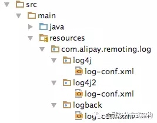
图12 - 日志模板作为通信框架，必要的日志打印也是很重要的。比如可以打印建连与断连的日志，便于排查连接问题；一些关键的异常场景也可以打印出来，方便定位问题；还可以打印一些关键字，来表示程序 BUG，便于框架开发者定位和分析。而打印日志的方式，我们选择依赖日志门面
SLF4J，然后提供不同的日志实现所需要的配置文件。运行时，根据业务所依赖的日志实现（比如log4j，log4j2，logback来动态加载日志配置）。同时默认使用异步logger来打印日志。
蚂蚁通信框架-BOLT
为了让 Java 程序员，花更多的时间在一些 Productive 的事情上，而不是纠结底层 NIO 的实现，处理难以调试的网络问题，Netty 应运而生
为了让中间件的开发者，花更多的时间在中间件的特性实现上，而不是重复地一遍遍制造通信框架的轮子，Bolt 应运而生。
Bolt 即为本文所描述的方法论的一个实践实现，名字取自迪士尼动画，闪电狗。定位是一个基于 Netty 最佳实践过的，通用、高效、稳定的通信框架。我们希望能把这些年，在 RPC，MSG 在网络通信上碰到的问题与解决方案沉淀到这个基础组件里，不断的优化和完善它。让更多的需要网络通信的场景能够统一受益。目前已经运用在了蚂蚁中间件的微服务，消息中心，分布式事务，分布式开关，配置中心等众多产品上。
除了 Bolt 提供的高效通信能力外，还可以方便的进行协议适配的工作。比如蚂蚁内部之前使用的 RPC 协议是 Tr 协议，是基于 Apache Mina 开发的老版本通信框架，由于年久失修，同时性能逐步落伍，我们重新设计了 Bolt 协议，精简以及新增了一些协议字段，同时切换到了 Netty 上。在新老 RPC 协议的切换期间，我们利用 Bolt 进行了协议适配，开发了 BoltTrAdaptor，最大程度的复用基础通信能力，仅仅把协议相关的部分单独实现，以此来保证新老协议调用的兼容性。
针对蚂蚁内部的新老通信框架，我们进行了细致的压测，如下图所示。我们的压测环境是，4 核10G 的虚拟机，千兆网卡，请求与响应包大小 1024 字节，分别压测了四种场景。由压测结果能看出 Bolt -> Bolt 的场景，整体吞吐量最大，平均RT最小，同时对比了 IO ，CPU 使用率等情况，资源整体利用率上也提升很多。
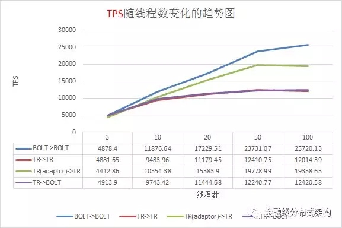
图13 - 压测TPS数据
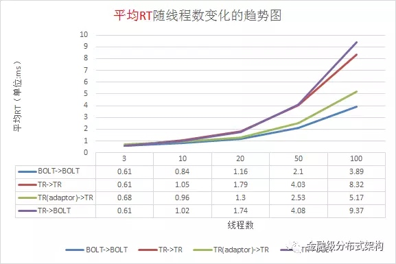
图14 - 压测平均RT数据
Bolt 在实验室里的极限性能压测，采用的是 32 核物理机，万兆网卡的环境，请求和响应 100 字节负载，服务端收到请求后马上返回响应，瓶颈基本就是业务线程池所使用的 ArrayBlockingQueue LinkedBlockingQueue 的性能瓶颈，压力到了十多万，就会出现较大幅度的毛刺和抖动。纯粹为了压测场景，改成使用 SynchronousQueue 后，毛刺减少了很多，基本能稳定在 30W TPS 的处理能力。
写在最后
近期我们也在准备开源蚂蚁 Bolt 通信框架，主要是吸取 Netty 的开源精神，回馈社区，与社区共建与完善。如果你也有制造通信框架轮子的需求，或者想适配内部的自有或者开源通信协议（比如 Dubbo 等），可以试一下蚂蚁 Bolt 通信框架，敬请期待！我们有很多想法还在实验室里酝酿，还没有落地到生产环境使用。非常欢迎一起来探讨网络通信问题，参与共建。
最后附上蚂蚁中间件的招聘链接，通信是分布式架构体系的基础设施，欢迎有志之士加盟，打造高效、稳定的通信技术。点击左下角的【阅读原文】获取蚂蚁中间件通信组的招聘信息。
参考
- Scalable IO in Java, Slides, by Doug Lea, http://gee.cs.oswego.edu/dl/cpjslides/nio.pdf
- Reactor, Thesis, by Douglas C. Schmidt, http://www.dre.vanderbilt.edu/~schmidt/PDF/reactor-siemens.pdf
- Hashed and Hierarchical Timing Wheels, Thesis, by George Varghese and Anthony Lauck, http://www.cs.columbia.edu/~nahum/w6998/papers/ton97-timing-wheels.pdf
- Netty Best Practices, Slides, by Norman Maurer, http://normanmaurer.me/presentations/2014-facebook-eng-netty/slides.html
- NSF-RPC的优化过程，博客文章，来自毕玄，http://bluedavy.me/?p=384
- Netty 源码分析系列 ，博客文章，来自永顺，https://segmentfault.com/a/1190000007282628
- 《Netty权威指南》，书籍，来自李林锋
- 《Netty实战》，书籍，来自Norman Maurer等著，何品翻译
附文中提到的一些链接地址信息
- Gecko: https://github.com/killme2008/gecko
- Mina: http://mina.apache.org/
- Netty: http://netty.io/
- Stackoverflow - Do we need more than a single thread for boss group?：https://stackoverflow.com/questions/22280916/do-we-need-more-than-a-single-thread-for-boss-group
- [#3218] Add ChannelPool abstraction and implementations：https://github.com/netty/netty/pull/3607